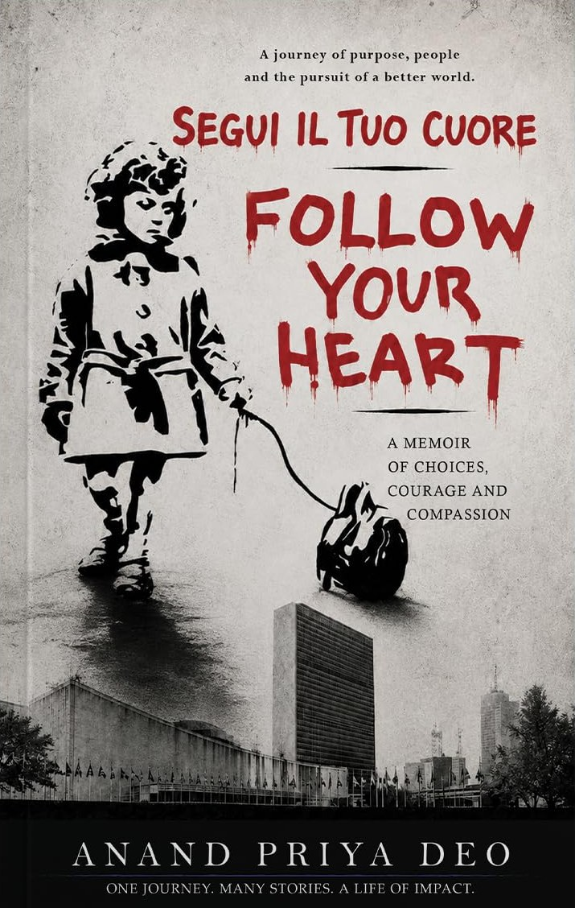
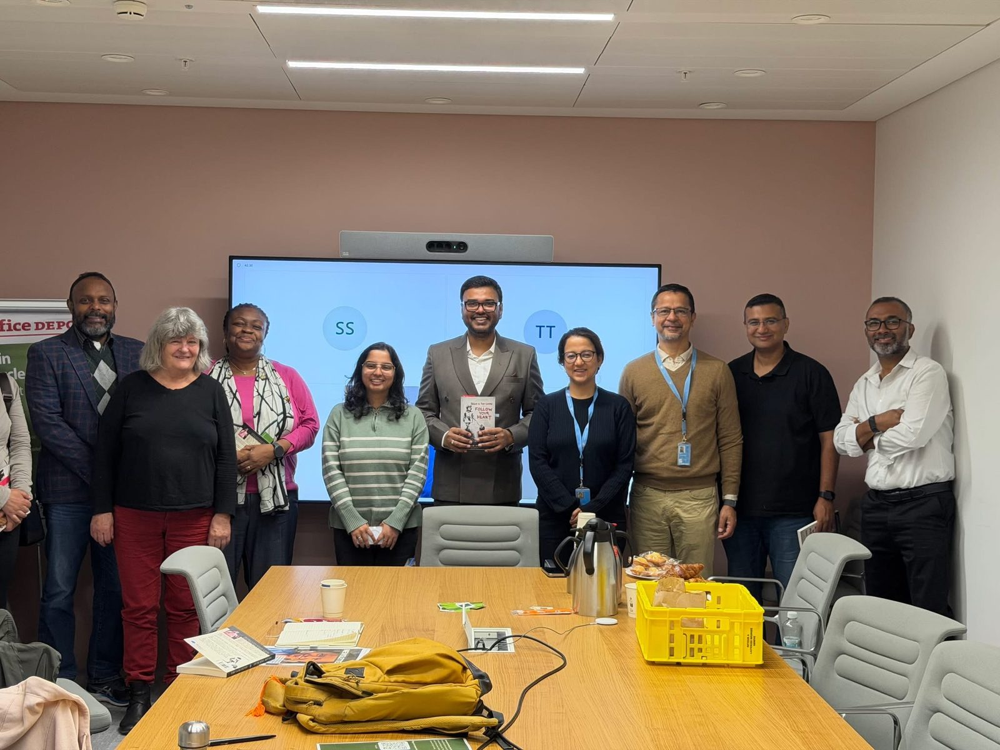
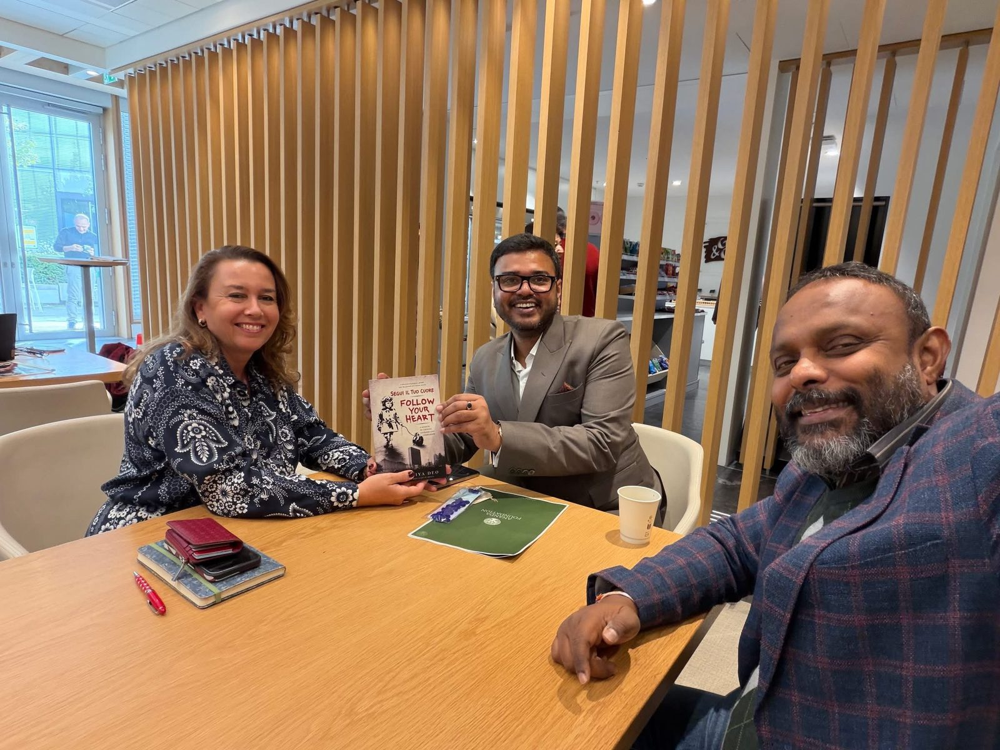
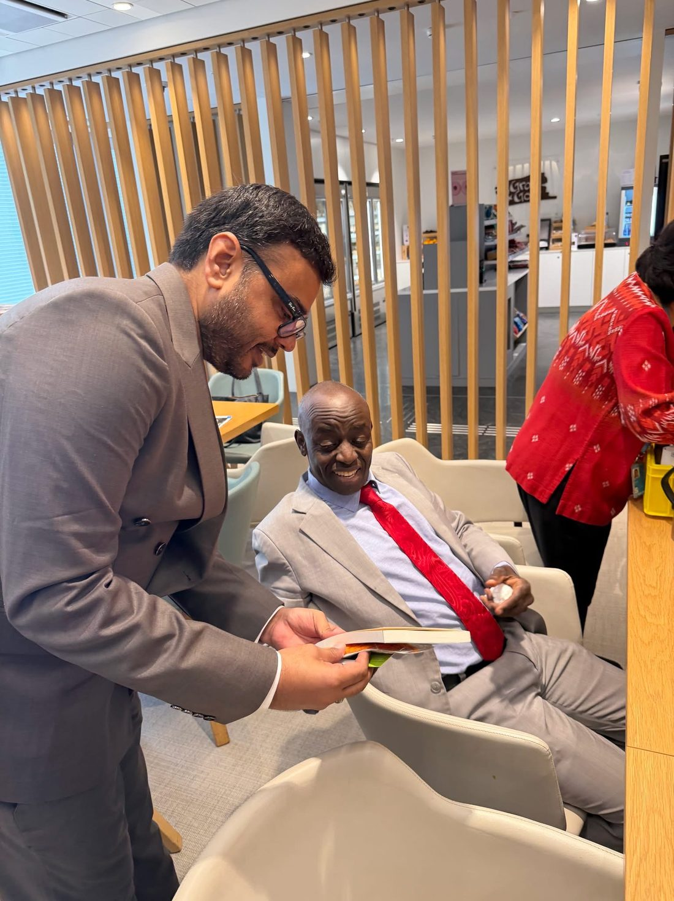
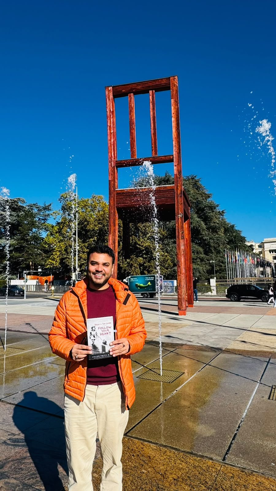
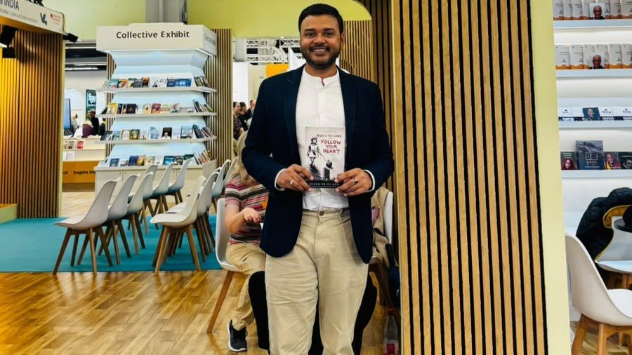
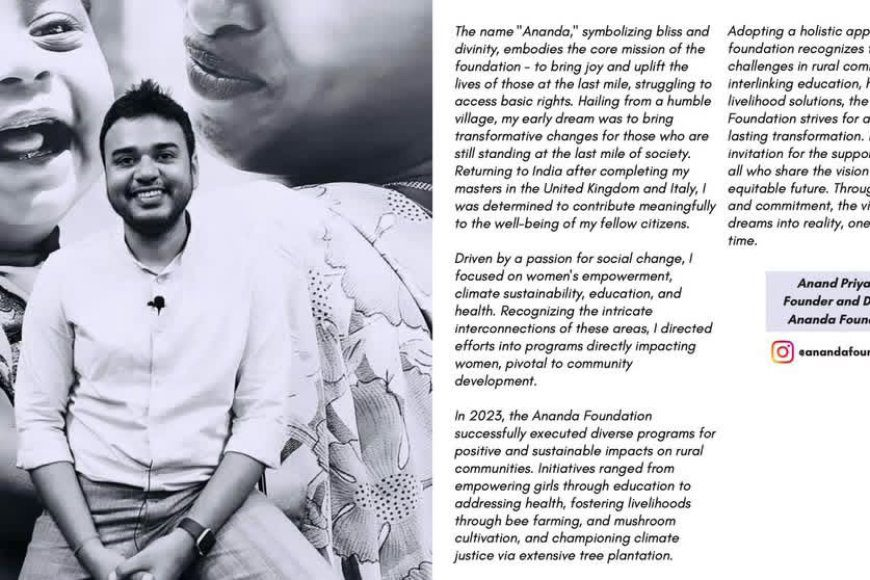
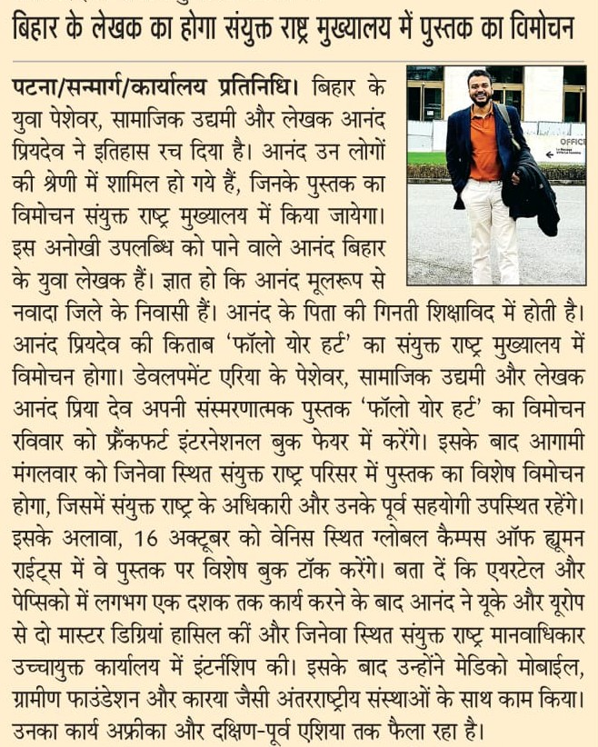

Ananda Foundation's founder, Anand Priya Deo, has published his memoir. Follow Your Heart tells the story of an unconventional path: nearly a decade with Airtel and PepsiCo, two master's degrees in the UK and Europe, an internship at the UN Office of the High Commissioner for Human Rights in Geneva, and development work with Medic Mobile, Grameen Foundation and Karya across Africa and Southeast Asia — and then the road back home to Sikariya, where the foundation began.
It is a book about courage, uncertainty and finding purpose, with a simple message: sometimes, finding your purpose begins with the courage to follow your heart.
A special launch at the UN premises in Geneva, with UN staff and former colleagues — in the same city where Anand began his human rights work, as an intern at the Office of the UN High Commissioner for Human Rights.




The book was introduced at the Frankfurt International Book Fair. "Being showered with love from all across nationalities is so overwhelming!" Anand wrote — follow the journey at @followyourheart_anand.


"For Anand Priya Deo, the United Nations represents an important part of a wider journey that has moved across corporate offices, international development organisations and rural Bihar."
Read the article →
The Hindi daily reported that the Nawada-born author had "created history", with his memoir launched at the United Nations.
See the clipping →Also covered by Kashish News, RD Times, The Indian Bulletin and The Prevalent India.
All News & Media →Get your copy of Anand's memoir — and if the story of Sikariya moves you, help the foundation's work continue.